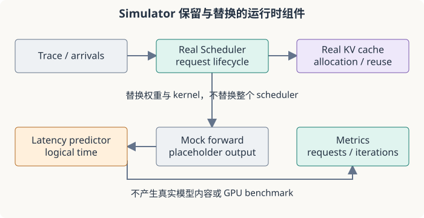
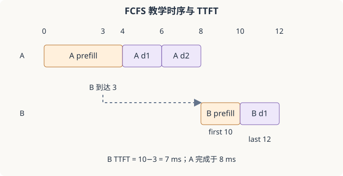

第 45 章 · SGLang 生产系统
SGLang Simulator：真实调度逻辑、预测时钟与容量规划
如何用真实 scheduler/cache 与替代 forward latency，在无模型权重情况下比较 serving 策略？
如何用真实 scheduler/cache 与替代 forward latency，在无模型权重情况下比较 serving 策略？ 从具体反例出发，连接算法、工程接口与测量边界。
1. 为什么 GPU benchmark 不够做所有搜索
线上实测成本高、流量变化大，调度与 cache 配置组合多。Simulator 保留真实 SGLang scheduler、request lifecycle 和 KV-cache 实现，用 latency predictor 替换 model forward。这不是只画排队公式，也不是模型精度或 GPU kernel 仿真器。适合在实验矩阵中缩小候选，再使用真实 GPU 验证。
2. 真实与替代的边界
C_ModelRunnerHook 用 mock model 替代权重加载，forward 返回 placeholder logits，sample 返回固定 token IDs，attention/CUDA graphs 不执行真实 kernel；native initialize/alloc memory pool lifecycle 保留。请求到达和 cache 行为仍可研究，但不能用生成内容评价任务准确率、工具调用或 logprob。

3. 逻辑时钟与到达事件
OFFLINE 模式不为预测计算 sleep，按预测 latency 推进逻辑时钟；BLOCKING 额外 sleep，让客户端观察预测 pacing。必须区分 arrival time、scheduler queue、first token、last token 与 simulation wall clock。ReqDispatcher 注入未来请求，真实运行时间不是被模拟系统的 TTFT。
4. 一个可复算的离散事件例子
单 worker FCFS toy：A 在0ms到达、prefill 4ms、decode 3 tokens 每个2ms；B 在3ms到达、prefill 2ms、decode 2 tokens 每个2ms。假设 prefill 后即产出第一个 token、其余 token 经 decode，则 A first=4,last=8，B start=8,first=10,last=12；TTFT 分别4和7，B 排队5。这里无 continuous batching，仅用于验证 timestamp 定义。

5. 指标从何而来
TTFT=first−arrival；request-level TPOT=(last−first)/(N−1)（N>1）；ITL 为相邻 token 时间差。输出吞吐按观察窗口统计有效输出 tokens，不能用 host 运行 simulator 的 wall time。若 N=1 则 TPOT 不适用，不能随意填0污染统计。
6. Predictor 误差与实验矩阵
AISimulate、ML 和 replay predictor 的输入、覆盖范围与校准方式不同。用真实 profiling trace 拟合/选 predictor，再在独立 workload 验证；需要检查未见 batch shape、长 context、HiCache load latency、time scale 与模型/hardware 变化。对比 predicted vs measured p50/p95 TTFT、TPOT、throughput；误差大则不要宣称容量结论可靠。
7. 部署范围和可复现报告
官方当前 integration 的 runtime 是单 worker（tp=ep=dp=pp=1）；配置可描述更大目标系统供 predictor 使用，但不会实际运行多卡 collectives。使用同一 monorepo checkout、模型配置/tokenizer、fresh output directory，区分 metrics.json、request.jsonl、iteration.jsonl。固定 trace、seed、arrival schedule、output lengths 和 predictor revision，保留原始报告。
8. 交互：选择工作负载与反例
Serving Simulation 教学实验
低负载：B 到达 10ms：A 已结束，B TTFT=2ms。
排队：B 到达 3ms：等待至8ms，TTFT=7ms。
预测偏差：若 A 的 prefill 从4ms误预测为6ms，B 开始变10ms、TTFT=9ms；queueing 放大前序误差。
教学模型仅验证机制与反例，不代表真实 GPU benchmark。
9. CPU 最小实验
下载 serving_simulation.py，使用标准库运行。源文件包含确定性输出及正反例断言。
python3 examples/serving_simulation.py实验是教学抽象，不运行真实 GPU serving、collectives 或网络传输。
10. 源码阅读路线与证据
固定上游快照 b323e8e6e3aacfe606b11a2ef51ae73bc8b283a7，区分当前实现、工程建议及教学推导。
- Supported scope：Simulator reuses scheduler/request/cache; runtime scope is single simulated worker TP/EP/DP/PP=1.
- Start a simulator server / Read the results：OFFLINE advances logical time without sleeping; BLOCKING also sleeps; metrics, request and iteration logs are separate.
- C_ModelRunnerHook：Model loading and GPU forward are mocked; native initialization and memory pool lifecycle retained; sample returns placeholder token IDs.
- ReqDispatcher：Request dispatcher handles logical arrival time and request dispatch.
- Requirements / Estimator SDK：The simulator uses the same monorepo SGLang and predictor dependencies, including AISimulate SDK.
前置章节：第 3 章 · 第 8 章 · 第 13 章 · 第 25 章 · 第 39 章 · 第 41 章。证据清单。